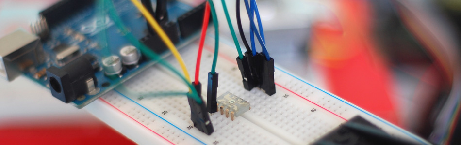

High Sensitivity Light Sensor TSL230R + Arduino

A while back we covered the TEMT6000, a great little analog sensor for getting ambient light readings when you need something a bit more sensitive than a simple Photoresistor. Well in the spirit of documenting everything we can get our hands on, this week we will be taking the sensitivity to the next level with the TSL230R Light Intensity Sensor.
I actually bought this a long time ago simply because it looked awesome. I mean really... How often do you see a clear chip? That was enough, I had to have it. Well, aside from looking downright awesome, it is also an incredibly sensitive digital light sensor. This awesome guy is sensitive enough to be used for photography light metering, or be able to tell when someone walks by a lamp on the other side of the room. Also, to top it all off, it actually has 3 sensitivity settings, so if you are in a low-light situation, it has you covered!
{kind=link}
Hooking it up
So the TSL230R is actually pretty simple, it really only has power, and signal out. But it has a bunch of extra pins so you can change sensitivity and output type if you want. We don't care about changing the output format, but I did want to keep the "sensitivity select" open for you incase you need it.
So just connect it up to your Arduino as shown in the image. Make sure to take note of either the larger pin in the bottom left (pin 4) or the circle on the top left (pin 1) to make sure you have it facing the right way.
Code
Before we get to far! If you are looking for a photo-ready reading from this sensor, in ISO, ASA, Lux or other, you are in the wrong place. You want this article here: Arduino and the Taos TSL230R Light Sensor: Getting Started.
If you want to be able to check for changes in light, and have some simpler code to tame this beast, keep reading.
So what the TSL230R does, is it sends out a digital Square Wave (simple up and down) signal that gets longer with less light, and shorter with more light. So we need to look at how long the wave is so we can figure out the brightness. We will actually be taking a few samples and averaging them so the signal will be more accurate and smoother. If you are looking at using a threshold to trigger something, you may want to up the number of samples it takes so it is even smoother and you don't get false positives. (but this will slow down how long it takes to read)
This code simply checks the output of the TSL230R, and prints to the Arduino's software serial terminal. With higher readings meaning brighter. You can change the sensitivity of the TSL230R as well. In the sketch, under setupTSL230, you can set TSL230_s0, and TSL230_s1 HIGH or LOW to make the sensor more or less sensitive to light. Great for low-light, or ultra-bright situations.
// Reports the frequency from the TSL230, higher number means brighter // Part: http://www.sparkfun.com/products/8940 // Article: http://bildr.org/2011/08/tsl230r-arduino/ int TSL230_Pin = 4; //TSL230 output int TSL230_s0 = 3; //TSL230 sensitivity setting 1 int TSL230_s1 = 2; //TSL230 sensitivity setting 2 int TSL230_samples = 6; //higher = slower but more stable and accurate void setup(){ Serial.begin(9600); setupTSL230(); } void loop(){ float lightLevel = readTSL230(TSL230_samples); Serial.println(lightLevel); } void setupTSL230(){ pinMode(TSL230_s0, OUTPUT); pinMode(TSL230_s1, OUTPUT); //configure sensitivity - Can set to //S1 LOW | S0 HIGH: low //S1 HIGH | S0 LOW: med //S1 HIGH | S0 HIGH: high digitalWrite(TSL230_s1, LOW); digitalWrite(TSL230_s0, HIGH); } float readTSL230(int samples){ //sample light, return reading in frequency //higher number means brighter float start = micros(); int readings = 0; while(readings < samples){ pulseIn(TSL230_Pin, HIGH); readings ++; } float length = micros() - start; float freq = (1000000 / (length / samples)) * 10; return freq; }
Article taken from bildr.org with minor changes - I am the original author of this content